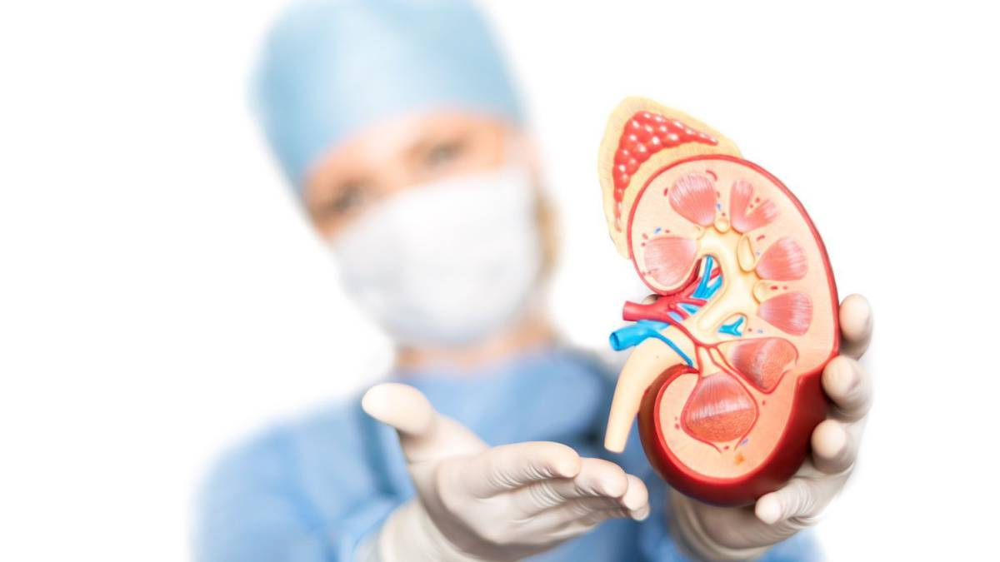

La Enfermedad Renal
es Controlable
- 


LA ENFERMEDAD RENAL
En las últimas décadas se ha convertido en uno de los más grandes problemas de salud hasta ahora conocidos.
A NIVEL MUNDIAL
El tratamiento se ha enfocado, principalmente, a la etapa final de la enfermedad utilizando la terapia dialítica.
INSP
Según datos del Instituto Nacional de Salud Pública el incremento de la enfermedad renal crónica en el adulto se debe a la diabetes mellitus y a la hipertensión arterial.
InnovacIón en nefrología
La Enfermedad Renal Crónica (ERC) es actualmente la quinta causa de muerte general en México y la tercera a nivel hospitalaria. En este sentido, es fundamental generar acciones preventivas y de diagnóstico oportuno. Considerando lo anterior Grupo DEGAG y Fresenius Kabi, han creado centros de atención nutricional para pacientes con Enfermedad Renal, con profesionales de la nutrición renal y dietética ofreciendo una mejor calidad de vida
Contamos con una infraestructura y equipo de Análisis de Composición Corporal (mBCA) de última generación, dinamómetro (mide fuerza muscular) Plicómetro (Medición de grasa) y Call Center.
Comunicación constante con el médico tratante para garantizar una mejor respuesta al tratamiento. Fomentar la adherencia al tratamiento con Ketosteril más un plan de alimentación.
Manteniendo la comunicación con el paciente y sus familiares a través del Call Center y reuniones mensuales. Reforzar el tratamiento de enfermedad base (diabetes e hipertensión). Buscar que el paciente continue siendo independiente.